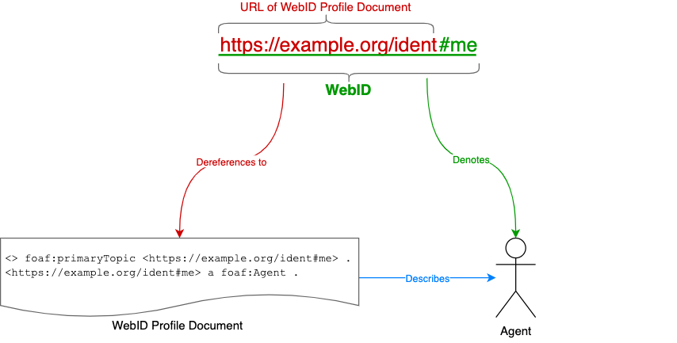

1. Introduction
This section is non-normative.
A WebID is an IRI with a HTTP(S) scheme that refers to an Agent (Person, Organization, Group, Device, etc.); a description of the Agent named by the WebID can be found in the respective WebID Document.
WebIDs can be used to build a Web of trust using vocabularies such as FOAF [FOAF] by allowing people to link their profiles in a public or protected manner. Such a web of trust can then be used by a Service to make authorization decisions, by allowing access to resources depending on the properties of an agent, such as that they are known by some relevant people, employed at a given company, a member of a family or some other group, etc.
This specification is for:
-
Anyone who wants to understand the architectural principles and notions underlying WebIDs
-
Content publishers who want to allocate identifiers to unambiguously name agents
-
Server application developers who want to provide client applications with WebIDs and associated agent descriptions
-
Client application developers who want to use a WebID to unambiguously identify their applications as agents
-
Specification authors who want to extend any of the WebID specifications via Extension Profiles, e.g., identity authentication protocols
1.1. Outline
This specification is divided in the following sections.
This section gives a high level overview of this specification, and presents the organization of the specification and the conventions used throughout this document.
Section 2 provides a short description for the most commonly used terms in this document.
Section 3 describes what a WebID is.
Section 4 expands on the use of IRI, URI and URL throughout this document.
Section 5 illustrates the relationship between a WebID, the Agent that is named by it, and the respective WebID Document.
Section 6 provides an example of an actual WebID and the related WebID Document.
Section 7 describes how a WebID Document should be published, which format should be used in doing so and what it may contain.
Section 8 describes how a request for a WebID Document should be handled.
2. Terminology
This section provides definitions for several important terms used in this document.
- Requesting Agent
-
The Requesting Agent initiates a request to a Service listening on a specific port using a given protocol on a given Server.
- Server
-
A Server is a physical or virtual machine, contactable at a domain name or IP address, that hosts Services which are accessible over the network.
- Service
-
A Service is an agent listening for requests at a particular domain name or IP address on a given Server.
- WebID
-
An identifier in the form of an IRI with a HTTP(S) scheme that unambiguously names an Agent and, when dereferenced, always leads to a WebID Document which itself indicates that it describes the Agent named by the WebID.
- WebID Document
-
An RDF document that describes an Agent.
- Agent
-
An entity that performs or can perform an action, e.g., a person, an organization, a device.
2.1. Namespaces
Examples assume the following namespace prefix bindings unless otherwise stated:
| Prefix | IRI |
|---|---|
foaf
| http://xmlns.com/foaf/0.1/ |
3. The WebID HTTP IRI
When using IRIs with a HTTP(s) scheme, it is possible to identify both a thing (which may exist outside of the Web) and a Web document describing the thing. For example, the person Bob is described on his homepage. Alice may not like the look of Bob’s homepage, but may want to link to the person Bob. Therefore, two IRIs are needed, one for Bob and one for Bob’s homepage (or an RDF document describing Bob).
A WebID HTTP IRI must be one that dereferences to a document the user controls.
For example, if a user Bob controls https://bob.example.org/profile, then his
WebID can be https://bob.example.org/profile#me.
There are two solutions that meet our requirements for identifying real-world objects: 303 redirects and hash IRIs. Which one is best to use depends on the situation. Both have advantages and disadvantages, as presented in [COOLURIS]. All examples in this specification will use such hash IRIs.
4. WebID as a URL and WebID as an IRI
This section is non-normative.
While a WebID is technically an [IRI] with a HTTP(S) scheme, it can also generally be considered a WHATWG [URL] with a HTTP(S) scheme. Implementers SHOULD prepare for the entire [IRI] space.
This specification follows the definitions and constraints expressed in Section 3.2 of [rdf12-concepts] regarding the use of IRIs within RDF syntax and their relationship with URIs and URLs.
This specification defers to the procedures defined in Section 3 of [IRI] regarding mapping and conversion between the IRI and URI spaces.
5. Overview
This section is non-normative.
The following diagram exemplifies the the relationship between a WebID IRI, the WebID Document it resolves to and the agent it denotes.

In the illustration above, the WebID IRI https://example.org/ident#me (containing the #me fragment identifier) is an identifier that denotes
(refers to) an Agent.
The WebID Document IRI https://example.org/ident (without the #me fragment identifier) denotes the document describing the agent who is the
referent of the WebID IRI.
As client HTTP libraries conforming to the HTTP standard automatically strip
the fragment before sending requests to the server, all requests made against
the WebID https://example.org/ident#me will implicitly be made against the
location of the corresponding WebID Document https://example.org/ident.
The WebID Document gives the meaning of the WebID: its RDF Graph contains a Concise Bounded Description of the WebID such that this subgraph forms a definite description of the referent of the WebID, that is, a description that distinguishes the referent of that WebID from all other things in the world. The WebID Document can, for example, contain relations to other documents depicting the WebID referent, or it can relate the WebID to principals used by different authentication protocols. (More information on WebID and other authentication protocols can be found on the WebID Identity Interoperability page).
6. Example
This section is non-normative.
As example of a real-life WebID, consider that of Tim Berners-Lee, a real physical person who has a history, who invented the World Wide Web, and who directed the World Web Consortium: https://www.w3.org/People/Berners-Lee/card#i .
Tim’s WebID can easily be dereferenced to its respective WebID Document with any suitable HTTP client, such as curl:
$ curl -H "Accept: text/turtle" https://www.w3.org/People/Berners-Lee/card#i
In doing so, we are presented with a document that includes the following statements:
@prefix : <http://xmlns.com/foaf/0.1/> . @prefix card: <https://www.w3.org/People/Berners-Lee/card#> . @prefix cc: <http://creativecommons.org/ns#> . @prefix dc: <http://purl.org/dc/elements/1.1/> . <> rdf : type : PersonalProfileDocument ; cc : license <http://creativecommons.org/licenses/by-nc/3.0/> ; dc : title "Tim Berners-Lee's FOAF file" ; : maker card : i ; : primaryTopic card : i .
7. Publishing the WebID Document
7.1. Format of a WebID Document
The Server MUST offer at least one RDF representation for a WebID Document.
The Server SHOULD offer [TURTLE] as one of the representations for a WebID Document.
RDF serialization formats include, but are not limited to, [JSON-LD11], [TURTLE], and [RDFA-CORE].
This specification does not mandate support for any specific format, following the principle of Orthogonality of Specifications. In the interest of interoperability, however, this specification warmly and earnestly suggests supporting the [TURTLE] format, whether in addition to other formats or as the only supported one.
7.2. Vocabulary of a WebID Document
WebID RDF graphs are built using vocabularies identified by URIs, that can be placed in subject, predicate or object position of the relations constituting the graph. The definition of each URI should be found at the namespace of the URI, by dereferencing it.
7.3. Contents of a WebID Document
A WebID Document MUST qualify the described Agent as the
document’s foaf:primaryTopic. Furthermore, a WebID Document SHOULD also qualify the described Agent as having type foaf:Agent.
Personal details are the most common requirement when registering an account with a website. Some of these pieces of information include an e-mail address, a name and perhaps an avatar image, expressed using the FOAF [FOAF] vocabulary. This section includes properties that SHOULD be used when conveying key pieces of personal information but are NOT REQUIRED to be present in a WebID Profile Document:
- foaf:name
-
The name of the individual or agent.
- foaf:knows
-
The WebID URI of a known person.
- foaf:img
-
An image representing a person.
7.4. Publishing a WebID Document using Turtle
This section is non-normative.
A widely used format for writing RDF graphs by hand is the Turtle [TURTLE] notation. It is easy to
learn, and very handy for communicating over e-mail and on mailing lists. The
syntax is very similar to the SPARQL query language. WebID Documents in Turtle should be served with the text/turtle content type.
Take for example the WebID https://bob.example.org/profile#me, for which the WebID Document contains the following Turtle representation:
@prefix foaf: <http://xmlns.com/foaf/0.1/> . <> a foaf : PersonalProfileDocument ; foaf : maker <#me> ; foaf : primaryTopic <#me> . <#me> a foaf : Person ; foaf : name "Bob" ; foaf : knows <https://example.edu/p/Alice#MSc> ; foaf : img <https://bob.example.org/picture.jpg> .
7.5. Publishing a WebID Document using the RDFa HTML notation
This section is non-normative.
RDFa in HTML [RDFA-CORE] is a way to markup HTML with relations that have a well defined semantics and mapping to an RDF graph. There are many ways of writing out the above graph using RDFa in HTML. Here is just one example of what a WebID Document could look like.
< div vocab = "http://xmlns.com/foaf/0.1/" about = "#me" typeof = "foaf:Person" > < p > My name is< span property = "name" > Bob</ span > and this is how I look like:< img property = "img" src = "https://bob.example.org/picture.jpg" title = "Bob" alt = "Bob" /></ p > < h2 > My Good Friends</ h2 > < ul > < li property = "knows" href = "https://example.edu/p/Alice#MSc" > Alice</ li > </ ul > </ div >
If a WebID provider would prefer not to mark up their WebID Document in
HTML+RDFa, but just provide a human readable format for users in plain HTML and
have the RDF graph appear in a machine readable format such as Turtle, then he SHOULD provide a link of type alternate to a machine readable format [RFC5988]. This can be placed in the HTTP header or in the html as shown
here:
< html > < head > < link rel = "alternate" type = "text/turtle" href = "profile.ttl" /> </ head > < body > ...</ body > </ html >
7.6. Privacy
This section is non-normative.
A WebID Document may contain public as well as private information about the agent named by the WebID. As some agents may not want to reveal a lot of information about themselves, RDF and Linked Data principles allows them to choose how much information they wish to make publicly available. This can be achieved by separating parts of the profile information into separate documents, each protected by access control policies.
On the other hand, some agents may want to publish more information about themselves, but only to a select group of trusted agents. In the following example, Bob is limiting access to his list of friends, by placing all foaf:knows relations into a separate document.
@prefix foaf: <http://xmlns.com/foaf/0.1/> . @prefix rdfs: <http://www.w3.org/2000/01/rdf-schema#> . <> a foaf : PersonalProfileDocument ; foaf : maker <#me> ; foaf : primaryTopic <#me> . <#me> a foaf : Person ; foaf : name "Bob" ; rdfs : seeAlso <https://bob.example.org/friends> ; foaf : img <https://bob.example.org/picture.jpg> .
Where https://bob.example.org/friends is a reference to an Access Control List (ACL) protected document containing:
@prefix foaf: <http://xmlns.com/foaf/0.1/> . <> a foaf : PersonalProfileDocument ; foaf : maker <https://bob.example.org/profile#me> ; foaf : primaryTopic <https://bob.example.org/profile#me> . <https://bob.example.org/profile#me> a foaf : Person ; foaf : knows <https://example.edu/p/Alice#MSc> ; foaf : knows <https://example.com/people/Mary/card#me> .
and having the following corresponding ACL rule, expressed using the WebAccessControl ontology:
@prefix acl: <http://www.w3.org/ns/auth/acl#> . <#FriendsOnly> ; acl : accessTo <https://bob.example.org/friends> ; acl : agent <http://example.edu/p/Alice#Msc> , <http://example.com/people/Mary/card#me> ; acl : mode acl : Read .
7.7. Security Considerations
This section is non-normative.
A WebID identifies an agent via a description found in the associated WebID Document. An agent that wishes to know what a WebID refers to, must rely on the description found in the WebID Profile. An attack on the relation between the WebID and the WebID Document can thus be used to subvert the meaning of the WebID, and to make agents following links within the WebID Document come to different conclusions from those intended by profile owners.
The standard way of overcoming such attacks is to rely on the cryptographic security protocols within the HTTPS [HTTP-TLS] stack. HTTPS servers are identified by a certificate either signed by a well known Certification Authority or whose public key is listed in the DNSSEC as specified by the DANE protocol [RFC6698], or both. This makes it much more difficult to set up a fake server by DNS Poisoning attacks. Resources served over HTTPS are furthermore signed and encrypted removing all the simple man-in-the-middle attacks. Applying the above security measure does not remove the burden from server administrators to take the appropriate security measures, in order to avoid compromising their servers. Similarly, clients that fetch documents on the web also need to make sure their work environment has not bee compromised.
As security is constantly being challenged by new attacks, to which new responses are found, a collection of security considerations will be made available on the WebID Wiki.
8. Processing the WebID Document
The Requesting Agent needs to fetch the WebID Document, if it does not have a valid one in cache. The Agent requesting the WebID Document MUST be able to parse documents in Turtle [TURTLE], but MAY also be able to parse documents in RDF/XML [RDF-SYNTAX-GRAMMAR] and RDFa [RDFA-CORE]. The result of this processing should be a graph of RDF relations that is queryable, as explained in the next section.
It is recommended that the Requesting Agent sets a qvalue for text/turtle in the HTTP Accept-Header with a higher priority than in the
case of application/xhtml+xml or text/html, as sites may produce HTML
without RDFa markup but with a link to graph encoded in a pure RDF format
such as Turtle. For an agent that can parse Turtle, rdf/xml and RDFa, the
following would be a reasonable Accept header:
Accept: text/turtle,application/rdf+xml,application/xhtml+xml;q=0.8,text/html;q=0.7
If the Requesting Agent wishes to have the most up-to-date WebID Profile Document for an HTTP URL, it can use the HTTP cache control headers to get the latest versions.
9. Acknowledgments
This section is non-normative.
Thanks to Henry Story for leading the development of WebID, without which none of this would exist.
The following people have been instrumental in providing thoughts, feedback, reviews, criticism and input in the creation of this specification:
Stéphane Corlosquet, Erich Bremer, Kingsley Idehen, Ted Thibodeau, Alexandre Bertails, Thomas Bergwinkl.